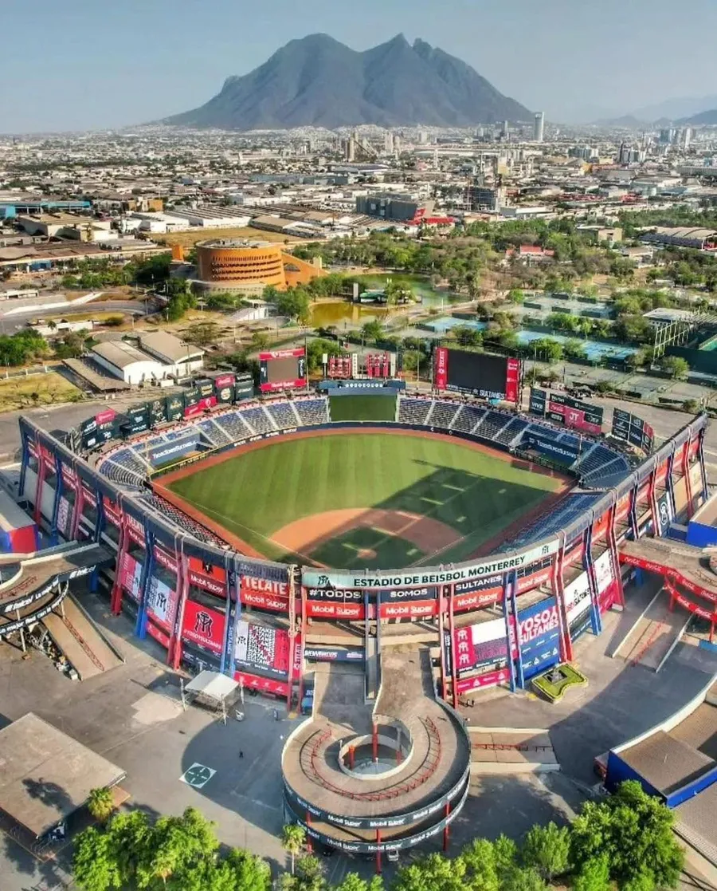
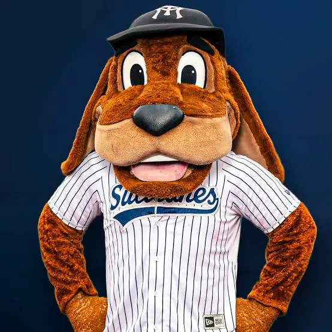

Equipo: Sultanes de Monterrey
Los Sultanes de Monterrey son el equipo con más campeonatos de la Zona Norte y el tercero más ganador de toda la Liga Mexicana de Beisbol. Juegan con los colores azul marino, blanco y rojo.
Historia
Nacieron en 1939 con el nombre de Carta Blanca, la cerveza que los patrocinaba. En 1942 se llamaron Industriales y desde 1949 son los Sultanes. Con el cubano Lázaro Salazar como mánager ganaron cuatro títulos en los años cuarenta, entre ellos el único tricampeonato de la historia de la liga (1947-1949).
También se les conoce como los "Fantasmas Grises". José "Pepe" Maiz García presidió el club de 1982 a 2025, una etapa con cinco campeonatos y estadio nuevo, y de 2019 a 2025 los Sultanes también tuvieron equipo en la Liga Mexicana del Pacífico, que se juega en invierno.
Estadio
Juegan en el Estadio de Beisbol Monterrey, el Palacio Sultán, inaugurado el 20 de julio de 1990. Es el estadio de beisbol más grande de México, con más de 21 mil lugares. Antes se llamó Estadio Mobil Super y desde 2025 lleva el nombre de Walmart Park. Ahí se jugaron partidos de temporada regular de Grandes Ligas en 2018 y 2019, y el Juego de Estrellas de la LMB en junio de 2026.

Mascota
El Perro Sultán es la mascota oficial: un perro café de orejas largas que anima cada juego con el uniforme a rayas y la gorra de los Sultanes.

Números retirados
- 7
Epitacio "La Mala" Torres. Jardinero de 1939 a 1956 y el primer pelotero de la LMB en llegar a 1,000 hits.
- 17
Lázaro Salazar. El "Príncipe de Belén", mánager cubano de los cuatro títulos de los años cuarenta.
- 20
Miguel Flores. Segunda base de 1995 a 2008: ganó tres títulos y fue el Jugador Más Valioso de la serie final de 1995.
- 21
Héctor Espino. El "Babe Ruth mexicano": en 1962, su primer año en Monterrey, bateó 32 jonrones y el equipo fue campeón. Su número está retirado en toda la LMB.
Temporada 2026
Con Henry Blanco como mánager terminaron terceros de la Zona Norte, con 49 victorias y 44 derrotas. En los playoffs eliminaron a Charros y a Caliente de Durango y llegaron a su tercera final del norte seguida, pero cayeron 4-1 ante los Toros, que después fueron campeones.
Zona Norte 2026
Contra toda la liga
Promedio de bateo
.27714.º de 20
Jonrones
7715.º de 20
Bases robadas
1163.º de 20
Efectividad
5.029.º de 20
| Equipo | Prom. | HR | Robos | Efect. |
|---|---|---|---|---|
| Acereros | .287 | 77 | 65 | 4.73 |
| El Águila | .271 | 82 | 70 | 5.37 |
| Algodoneros | .279 | 101 | 59 | 5.46 |
| Bravos | .306 | 125 | 87 | 5.65 |
| Caliente | .294 | 102 | 91 | 4.96 |
| Charros | .282 | 72 | 131 | 5.14 |
| Conspiradores | .303 | 143 | 39 | 7.08 |
| Diablos Rojos | .312 | 146 | 107 | 5.11 |
| Dorados | .298 | 87 | 41 | 5.37 |
| Guerreros | .307 | 82 | 34 | 5.21 |
| Leones | .263 | 48 | 53 | 4.57 |
| Olmecas | .287 | 88 | 92 | 4.17 |
| Pericos | .301 | 98 | 139 | 5.19 |
| Piratas | .274 | 80 | 68 | 4.96 |
| Rieleros | .295 | 112 | 59 | 5.99 |
| Saraperos | .273 | 87 | 49 | 5.33 |
| Sultanes | .277 | 77 | 116 | 5.02 |
| Tecolotes | .261 | 69 | 75 | 4.81 |
| Tigres | .258 | 69 | 71 | 4.53 |
| Toros | .283 | 84 | 82 | 3.28 |
Líderes de bateo 2026
Promedio de bateo
- Gustavo Nuñez.321
- Josh Lester.290
- Víctor Mendoza.289
Jonrones
- Josh Lester15
- Víctor Mendoza13
- Sócrates Brito8
Carreras producidas
- Víctor Mendoza67
- Josh Lester51
- Sócrates Brito37
Bases robadas
- Gustavo Nuñez30
- Sócrates Brito25
- Ismael Alcántara16